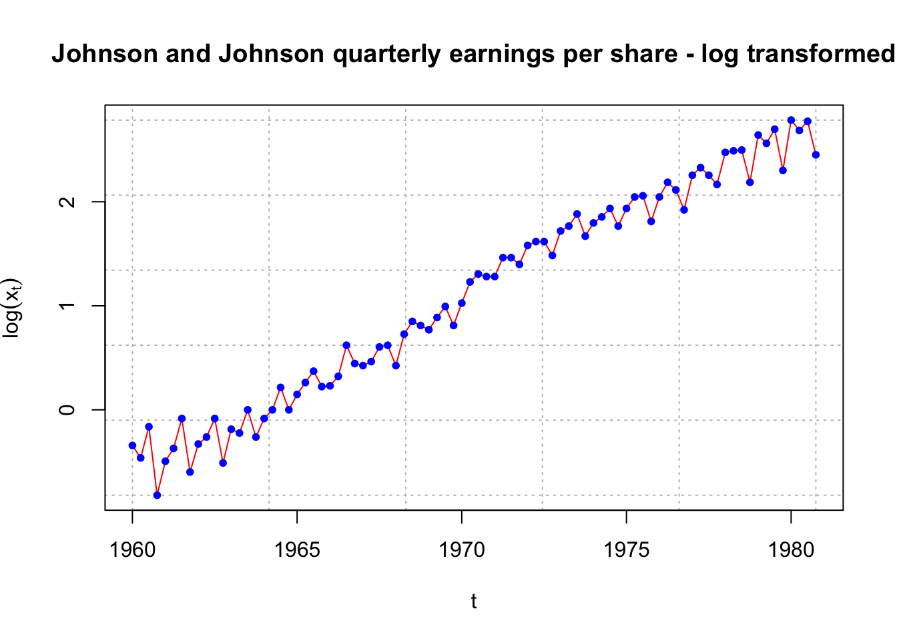
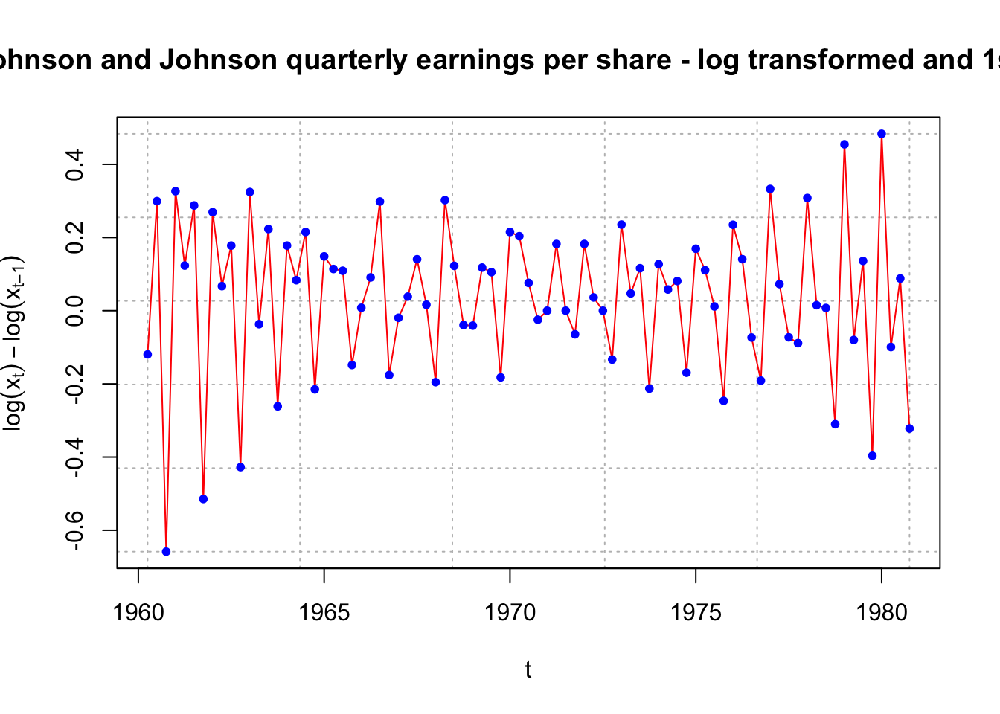
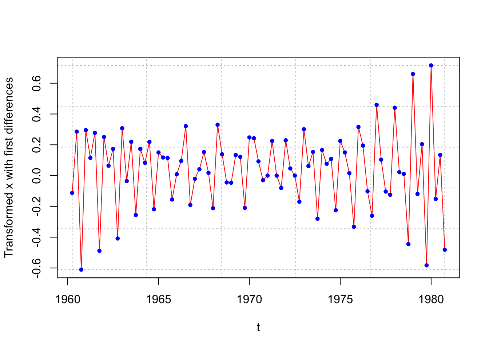

Chapter 8 Resolving Non-Stationarity Problems
8.1 Differencing
Differencing helps to create the constant mean needed for stationarity. We will use differencing a lot!
1st differences: \(x_t – x_{t-1} = \nabla x_t\)
2nd differences: \((x_t – x_{t-1}) – (x_{t-1} – x_{t-2}) = \nabla x_t – \nabla x_{t-1} = \nabla^2x_t\)
Taking “differences” between successive data values in the time series helps to remove trend. Specifically, 1st differences help remove linear trend and 2nd differences help remove quadratic trend.
Why does this work? Consider the linear trend model \(x_t = \beta_0 + \beta_1t\) where t = time and $_1$0. Then
\[x_t – x_{t-1} = \beta_0 + \beta_1t – [\beta_0 + \beta_1(t – 1)] = \beta_1\] which is not dependent on t.
Example 8.1 Non-stationarity in the mean
Click Here to download data.
Below is the code for a plot of xt vs. t and the ACF for xt.
nonstat.mean <- read.csv(file="nonstat.mean.csv")
head(nonstat.mean)## time x
## 1 1 1.31
## 2 2 13.67
## 3 3 6.29
## 4 4 -0.95
## 5 5 9.59
## 6 6 -0.45tail(nonstat.mean)## time x
## 95 95 92.69
## 96 96 91.22
## 97 97 100.00
## 98 98 102.80
## 99 99 93.82
## 100 100 108.72dev.new(width=8, height=6, pointsize=10)
plot(x=nonstat.mean$x, ylab=expression(x[t]), xlab="t (time)", type="l", col="red", main="Nonstationary time series", panel.first=grid(col="gray", lty="dotted"))
points(x=nonstat.mean$x, col="blue", pch=20)acf(x=nonstat.mean$x, type="correlation", main="Plot of the ACF")Whenever you see a ACF plot like this(high correlation), it’s highly likely that there’s a non-stationarity in mean.
# scatter plot of x_t vs. x_t-1
x.ts <- ts(nonstat.mean[,2])
set1 <- ts.intersect(x.ts, x.ts1=lag(x=x.ts, k=-1))
head(set1)## x.ts x.ts1
## [1,] 13.67 1.31
## [2,] 6.29 13.67
## [3,] -0.95 6.29
## [4,] 9.59 -0.95
## [5,] -0.45 9.59
## [6,] 17.22 -0.45cor(set1)## x.ts x.ts1
## x.ts 1.000000 0.857779
## x.ts1 0.857779 1.000000# Need as.numeric() so that plot.ts() is not run, want plot.default()
plot(y=as.numeric(set1[,1]), x=as.numeric(set1[,2]), ylab=expression(x[t]), type="p", xlab=expression(x[t-1]))
# you can see from the graph there's a positive linear relationship, this is why the correlation is so high.- This data is said to have “nonstationarity in the mean” because the mean of \(x_t, \mu_t,\) appears to be changing as a function of time.
- Why is there large positive autocorrelation at lag = 1, 2, … ?
- This is b/c we have a positive linear relationship btw \(x_t\) and \(x_{t-1}\).
Below is the code to find the first differences:
# Find first differences
first.diff <- diff(x=nonstat.mean$x, lag=1, differences=1)
first.diff[1:5]## [1] 12.36 -7.38 -7.24 10.54 -10.04nonstat.mean$x[2]-nonstat.mean$x[1]## [1] 12.36nonstat.mean$x[3]-nonstat.mean$x[2]## [1] -7.38plot(x= first.diff, ylab=expression(x[t]-x[t-1]), xlab="t (time)", type="l", col="red", main="First differences", panel.first = grid(col="gray",lty="dotted"))
points(x=first.diff, col="blue", pch=20) The linear relationship just disappears after first differencing!
The linear relationship just disappears after first differencing!
acf(x=first.diff, type="correlation", main="Plot of the ACF for first differences")
If you want xt and xt - xt-1 in the same data frame, use the ts.intersect() function:
x <- ts(data=nonstat.mean$x)
x.diff1 <- ts(data=first.diff, start=2)
ts.intersect(x, x.diff1)## Time Series:
## Start = 2
## End = 100
## Frequency = 1
## x x.diff1
## 2 13.67 12.36
## 3 6.29 -7.38
## 4 -0.95 -7.24
## 5 9.59 10.54
## 6 -0.45 -10.04
## 7 17.22 17.67
## 8 -6.88 -24.10
## 9 10.36 17.24
## 10 12.53 2.17
## 11 4.22 -8.31
## 12 17.19 12.97
## 13 26.02 8.83
## 14 19.14 -6.88
## 15 23.55 4.41
## 16 30.05 6.50
## 17 21.61 -8.44
## 18 26.86 5.25
## 19 36.59 9.73
## 20 10.67 -25.92
## 21 26.58 15.91
## 22 19.81 -6.77
## 23 31.54 11.73
## 24 22.74 -8.80
## 25 37.87 15.13
## 26 35.86 -2.01
## 27 48.18 12.32
## 28 36.16 -12.02
## 29 37.10 0.94
## 30 43.03 5.93
## 31 27.79 -15.24
## 32 33.05 5.26
## 33 22.76 -10.29
## 34 36.72 13.96
## 35 43.67 6.95
## 36 31.76 -11.91
## 37 37.28 5.52
## 38 46.81 9.53
## 39 37.46 -9.35
## 40 46.50 9.04
## 41 35.61 -10.89
## 42 48.56 12.95
## 43 43.68 -4.88
## 44 46.54 2.86
## 45 62.40 15.86
## 46 28.79 -33.61
## 47 47.88 19.09
## 48 49.36 1.48
## 49 77.58 28.22
## 50 41.47 -36.11
## 51 54.95 13.48
## 52 24.10 -30.85
## 53 27.68 3.58
## 54 55.36 27.68
## 55 41.44 -13.92
## 56 76.86 35.42
## 57 51.43 -25.43
## 58 41.03 -10.40
## 59 51.94 10.91
## 60 47.14 -4.80
## 61 54.05 6.91
## 62 48.72 -5.33
## 63 53.41 4.69
## 64 69.12 15.71
## 65 83.26 14.14
## 66 62.53 -20.73
## 67 76.77 14.24
## 68 52.98 -23.79
## 69 61.83 8.85
## 70 67.64 5.81
## 71 66.08 -1.56
## 72 80.28 14.20
## 73 87.40 7.12
## 74 88.11 0.71
## 75 65.85 -22.26
## 76 82.29 16.44
## 77 97.92 15.63
## 78 79.62 -18.30
## 79 81.30 1.68
## 80 58.63 -22.67
## 81 89.71 31.08
## 82 85.11 -4.60
## 83 70.66 -14.45
## 84 74.24 3.58
## 85 74.27 0.03
## 86 66.52 -7.75
## 87 85.93 19.41
## 88 95.23 9.30
## 89 87.26 -7.97
## 90 74.88 -12.38
## 91 73.44 -1.44
## 92 89.44 16.00
## 93 62.11 -27.33
## 94 90.01 27.90
## 95 92.69 2.68
## 96 91.22 -1.47
## 97 100.00 8.78
## 98 102.80 2.80
## 99 93.82 -8.98
## 100 108.72 14.90Why does the data set start at 2?
Other types of differencing:
- 2nd differences:
diff(x, lag = 1, differences = 2) - xt – xt-2:
diff(x, lag = 2, differences = 1); this can be useful when there is a “seasonal” trend
# Second differences
diff(x, lag = 1, differences=2)## Time Series:
## Start = 3
## End = 100
## Frequency = 1
## [1] -19.74 0.14 17.78 -20.58 27.71 -41.77 41.34 -15.07 -10.48 21.28
## [11] -4.14 -15.71 11.29 2.09 -14.94 13.69 4.48 -35.65 41.83 -22.68
## [21] 18.50 -20.53 23.93 -17.14 14.33 -24.34 12.96 4.99 -21.17 20.50
## [31] -15.55 24.25 -7.01 -18.86 17.43 4.01 -18.88 18.39 -19.93 23.84
## [41] -17.83 7.74 13.00 -49.47 52.70 -17.61 26.74 -64.33 49.59 -44.33
## [51] 34.43 24.10 -41.60 49.34 -60.85 15.03 21.31 -15.71 11.71 -12.24
## [61] 10.02 11.02 -1.57 -34.87 34.97 -38.03 32.64 -3.04 -7.37 15.76
## [71] -7.08 -6.41 -22.97 38.70 -0.81 -33.93 19.98 -24.35 53.75 -35.68
## [81] -9.85 18.03 -3.55 -7.78 27.16 -10.11 -17.27 -4.41 10.94 17.44
## [91] -43.33 55.23 -25.22 -4.15 10.25 -5.98 -11.78 23.88(nonstat.mean$x[3] - nonstat.mean$x[2]) - (nonstat.mean$x[2] - nonstat.mean$x[1])## [1] -19.74# x_t - x_t-2
diff(x, lag = 2, differences = 1)## Time Series:
## Start = 3
## End = 100
## Frequency = 1
## [1] 4.98 -14.62 3.30 0.50 7.63 -6.43 -6.86 19.41 -6.14 4.66
## [11] 21.80 1.95 -2.47 10.91 -1.94 -3.19 14.98 -16.19 -10.01 9.14
## [21] 4.96 2.93 6.33 13.12 10.31 0.30 -11.08 6.87 -9.31 -9.98
## [31] -5.03 3.67 20.91 -4.96 -6.39 15.05 0.18 -0.31 -1.85 2.06
## [41] 8.07 -2.02 18.72 -17.75 -14.52 20.57 29.70 -7.89 -22.63 -17.37
## [51] -27.27 31.26 13.76 21.50 9.99 -35.83 0.51 6.11 2.11 1.58
## [61] -0.64 20.40 29.85 -6.59 -6.49 -9.55 -14.94 14.66 4.25 12.64
## [71] 21.32 7.83 -21.55 -5.82 32.07 -2.67 -16.62 -20.99 8.41 26.48
## [81] -19.05 -10.87 3.61 -7.72 11.66 28.71 1.33 -20.35 -13.82 14.56
## [91] -11.33 0.57 30.58 1.21 7.31 11.58 -6.18 5.92nonstat.mean$x[3] - nonstat.mean$x[1]## [1] 4.98# Plot
lag.plot(x, lags = 4, layout = c(2,2), do.lines = FALSE)
Note: There are formal hypothesis tests to determine if differencing is needed. This corresponds to an area of time series known as “unit root” testing. The name will be clear once we examine autoregressive models in detail.
8.2 Backshift Operator
A convenient way to represent differencing in time series models is to use the “backshift operator”. It is denoted by “B” and defined as follows: \[Bx_t=x_{t-1}\] Notice that \(x_t\) moved back one-time period when the backshift operator was applied to it.
In general, \(B^2x_t = x_{t-2}, B^3x_t = x_{t-3}, …, and \quad B^kx_t = x_{t-k}.\)
Notes:
- Let C be a constant not indexed by time. Then \(BC = C.\)
- \((1-B)x_t = x_t – x_{t-1} = \nabla x_t\)
- \(B\times B = B^2\)
- \[(1-B)^2x_t = (1 - 2B + B^2)x_t = x_t – 2Bx_t + B^2x_t\\ = x_t – 2x_{t-1} + x_{t-2}\\ = x_t – x_{t-1} – x_{t-1} + x_{t-2}\\ = (x_t – x_{t-1}) – (x_{t-1} – x_{t-2})\\ = \nabla^2x_t\]
- \((1-B)^0x_t = x_t\)
- \((1-B)x_t\) can be thought of as a “linear filter” since the linear trend is being filtered out of the time series.
Example 8.2 Moving Average
\(m_t=\frac{w_t+w_{t-1}+w_{t-2}}{3}\), where \(w_t \sim \mathrm{ind}N(0,\sigma^2_w) \forall t=1,..n\) can be represented by \((1+B+B^2)\frac{w_t}{3}\)
Example 8.3 Autoregression
\(x_t=0.7x_{t-1}+w_t\), where \(w_t \sim \mathrm{ind}N(0,\sigma^2_w) \forall t=1,..n\) can be represented by \((1-0.7B)x_t=w_t\)
Example 8.4 first differencing needed example
Consider the following model:
\((1-0.7B)(1-B)x_t=w_t\), where \(w_t \sim \mathrm{ind}N(0,\sigma^2_w) \forall t=1,..n\). This simplifies to
\[(1-0.7B)(x_t-x_{t-1})=w_t\\ \iff x_t-x_{t-1}-0.7Bx_t+0.7Bx_{t-1}=w_t\\ \iff x_t=x_{t-1}+0.7x_{t-1}-0.7x_{t-2}+w_t\\ \iff x_t=1.7x_{t-1}-0.7x_{t-2}+w_t\]
Later in the course, we will identify this as a ARIMA(1,1,0) model.
Suppose a realization of a time series is simulated from this model. Below is a plot of the data.
set.seed(7328)
w <- rnorm(n = 200, mean = 0, sd = 1)
x <- numeric(length = 200)
x.1 <- 0
x.2 <- 0
for (i in 1:length(x)) {
x[i] <- 1.7*x.1 - 0.7*x.2 + w[i]
x.2 <- x.1
x.1 <- x[i]
}
#Do not use first 100
X <- x[101:200]dev.new(width = 8, height = 6, pointsize = 10)
plot(x = X, ylab = expression(x[t]), xlab = "t", type =
"l", col = "red", lwd = 1 , main =
expression(paste("Data simulated from ", (1-0.7*B)*(1-
B)*x[t] == w[t], " where ", w[t], "~N(0,1)")),
panel.first=grid(col = "gray", lty = "dotted"))
points(x = X, pch = 20, col = "blue")
# from the graph there's nonstationarity in meanacf(x=X, type="correlation", main="Plot of the ACF")
After the first differences:
# Finf first differences
plot(x=diff(x=X, lag=1, differences = 1), ylab=expression(x[t]-x[t-1]), xlab="t (time)", type="l", col="red", main=expression(paste("1st diff. for data simulated from ", (1-0.7*B)*(1-B)*x[t] == w[t], " where
", w[t], "~N(0,1)")), panel.first=grid(col="gray",lty="dotted"))
points(x=diff(x=X, lag=1, differences = 1), pch=20, col="blue")
acf(x=diff(x=X, lag=1, differences = 1), type="correlation", main="Plot of the ACF")
An easier way is to use arima.sim() to simulate the data.
8.3 Fractional Differencing
Use fractional powers of B between –0.5 to 0.5 to do the differencing. This is used with long-memory time series.
Notes:
- Differencing is often used to help make a nonstationary in the mean time series stationary. Unfortunately in real applications, we do not know what exact level of differencing is needed (we can approximate it). If a too high of level of differencing is done, this can hurt a time series model. As a compromise between differencing and not differencing at all, fractional differencing can be used.
- The reason why these are called a “long memory” time series can be seen from a “short memory” time series. A short memory stationary process will have \(\rho(h)\to 0\) “quickly” as \(h\to \infty\). A long memory time series does not and has \(\rho(h)\to 0\) “slowly”. More on this later in the course.
- The fractional difference series can be represented as \[\nabla^dx_t=\sum_{j=0}^{\infty}\pi_jx_{t-j}\]
where the \(\pi_j\) are found through a Taylor series expansion of \((1-B)^d\).
8.4 Transformations
In regression analysis, transformations of the response variable are taken to induce approximate constant variance. In a similar manner, we can take transformations of xt to help make a nonstationary in the variance time series be approximately stationary in the variance.
Example 8.5 Johnson & Johnson earnings per share data
This data comes from Shumway and Stoffer’s book.
library(astsa)
x <- jj
x## Qtr1 Qtr2 Qtr3 Qtr4
## 1960 0.710000 0.630000 0.850000 0.440000
## 1961 0.610000 0.690000 0.920000 0.550000
## 1962 0.720000 0.770000 0.920000 0.600000
## 1963 0.830000 0.800000 1.000000 0.770000
## 1964 0.920000 1.000000 1.240000 1.000000
## 1965 1.160000 1.300000 1.450000 1.250000
## 1966 1.260000 1.380000 1.860000 1.560000
## 1967 1.530000 1.590000 1.830000 1.860000
## 1968 1.530000 2.070000 2.340000 2.250000
## 1969 2.160000 2.430000 2.700000 2.250000
## 1970 2.790000 3.420000 3.690000 3.600000
## 1971 3.600000 4.320000 4.320000 4.050000
## 1972 4.860000 5.040000 5.040000 4.410000
## 1973 5.580000 5.850000 6.570000 5.310000
## 1974 6.030000 6.390000 6.930000 5.850000
## 1975 6.930000 7.740000 7.830000 6.120000
## 1976 7.740000 8.910000 8.280000 6.840000
## 1977 9.540000 10.260000 9.540000 8.729999
## 1978 11.880000 12.060000 12.150000 8.910000
## 1979 14.040000 12.960000 14.850000 9.990000
## 1980 16.200000 14.670000 16.020000 11.610000dev.new(width = 8, height = 6, pointsize = 10) #Opens up wider plot window than the default (good for time series plots)
plot(x = x, ylab = expression(x[t]), xlab = "t", type =
"l", col = "red", lwd = 1, main = "Johnson and Johnson
quarterly earnings per share", panel.first = grid(col =
"gray", lty = "dotted"))
points(x = x, pch = 20, col = "blue")
# an upward trend in mean
# and the variance is increasing as well
# both non-stationarity in mean and varianceplot(x = log(x), ylab = expression(log(x[t])), xlab = "t", type = "l", col = "red", lwd = 1 ,
main = "Johnson and Johnson quarterly earnings per share - log transformed",
panel.first = grid(col = "gray", lty = "dotted"))
points(x = log(x), pch = 20, col = "blue")
#we deal with non-stationarity in variance#Still some variance issues???
plot(x = diff(x = log(x), lag = 1, differences = 1), ylab = expression(log(x[t]) - log(x[t-1])), xlab = "t", type = "l", col = "red", lwd = 1 ,
main = "Johnson and Johnson quarterly earnings per share - log transformed and 1st diff.",
panel.first = grid(col = "gray", lty = "dotted"))
points(x = diff(x = log(x), lag = 1, differences = 1), pch = 20, col = "blue")
Notes:
- Typical transformations include \(log(x_t),\sqrt{x_t}\) and \(x_t^{-1}\) There are a few different ways to deciding between the appropriate transformations. Usually, I will try all of these transformations and examine a plot of the transformed data over time to determine if the transformation worked. Constants may need to be added to \(x_t\) if \(x_t\) can be less than 0.
- Regression courses sometimes teach the Box-Cox family of transformations to determine an appropriate transformation. The process involves finding the “best” \(\lambda\) to transform \(x_t\) in the following manner:
\[
y_t=
\begin{cases}
(x^{\lambda}_t-1)/\lambda & \text{if } \lambda \ne 0 \\
log(x_t) & \text{if } \lambda=0 \\
\end{cases}
\]
I have not found it used often in time series analysis. For example, Shumway and Stoffer suggest it could be used here, but do not explore it further. The BoxCox() and BoxCox.lambda() functions from the forecast package provide ways to obtain it. Please see my program.
#How could one do a Box-Cox transformation here?
library(package = forecast)## Registered S3 method overwritten by 'quantmod':
## method from
## as.zoo.data.frame zoo##
## Attaching package: 'forecast'## The following object is masked from 'package:astsa':
##
## gassave.it <- BoxCox(x = x, lambda = "auto")
# save.it - this has the transformed data
names(save.it) # Not useful## NULLattributes(save.it) # Older form of R coding shows it## $tsp
## [1] 1960.00 1980.75 4.00
##
## $class
## [1] "ts"
##
## $lambda
## [1] 0.1540791attributes(save.it)$lambda## [1] 0.1540791# Looking at the code in BoxCox() leads one to use the function below to
# obtain lambda
BoxCox.lambda(x = x)## [1] 0.1540752lambda <- BoxCox.lambda(x = x)
# Don't see a benefit from using this transformation over log()
plot(x = (x^lambda - 1)/lambda, ylab = "Transformed x", xlab = "t", type = "l", col = "red", lwd = 1 ,panel.first = grid(col = "gray", lty = "dotted"))
points(x = (x^lambda - 1)/lambda, pch = 20, col = "blue")
plot(x = diff(x = (x^lambda - 1)/lambda, lag = 1, differences = 1),
ylab = "Transformed x with first differences", xlab = "t", type = "l",
col = "red", lwd = 1 ,
panel.first = grid(col = "gray", lty = "dotted"))
points(x = diff(x = (x^lambda - 1)/lambda, lag = 1, differences = 1), pch = 20, col = "blue")
- If the variance stabilizing transformation is needed, do this before differencing (see Wei’s time series book for a discussion). For example, suppose differencing and a natural log variance stabilizing transformation is needed. Then examine \(log(x_t) – log(x_{t-1})\) instead of \(log(x_t – x_{t-1}).\)
- Variance stabilizing transformations often help with normality assumption of \(w_t\).